Look n°11
Salle à manger élégante en marbre et bouclette
Une grande salle à manger qui brille le soir : table ovale effet marbre, chaises en bouclette, suspensions en verre strié et miroir rond rétroéclairé. Voici les articles pour recréer ce look chez toi, même en commençant par les suspensions et les chaises.
Prix au 26/10/2026
-
Table à manger ovale extensible effet marbre
160 à 200 cm (avec la rallonge), plateau effet marbre blanc, pied en panneaux de bois clair. Sur l'image, la rallonge est ouverte.
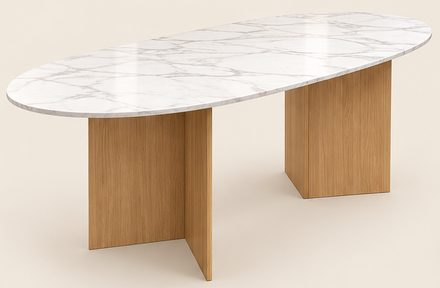
139,99 €Voir sur Amazon -
Chaises-fauteuils en bouclette, pieds en bois (lot de 2)
Tissu bouclette greige, dossier enveloppant avec accoudoirs. L'image en montre 9 : compte 4 ou 5 lots.
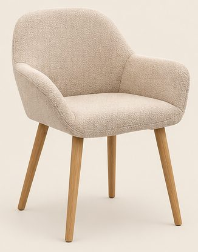
139,99 € le lotVoir sur Amazon -
Tapis crème à arcs en relief, 200 × 290 cm
Poils longs et doux, motif d'arcs en relief.
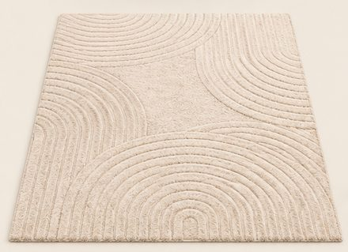
129,90 €Voir sur Amazon -
Buffet en chêne à portes cannelées, 120 cm
3 portes à fines rainures, pieds en bois fuselés.
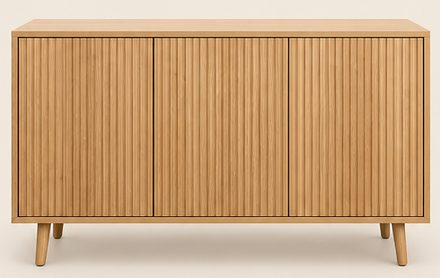
199,00 €Voir sur Amazon -
Suspension en verre strié et laiton doré
Verre strié ambré clair, finition laiton, ampoule E27 non fournie. L'image en montre 6, à des hauteurs différentes.
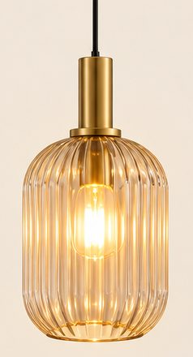
59,99 € l'unitéVoir sur Amazon -
Miroir rond LED rétroéclairé Ø 80 cm, cadre doré
Lumière réglable, halo chaud tout autour.
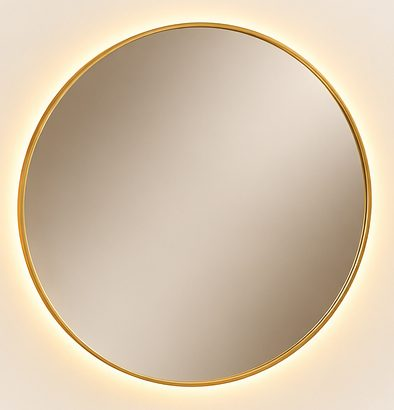
159,99 €Voir sur Amazon -
Panneaux muraux à tasseaux en chêne (lot de 4)
120 × 60 cm chacun (2,88 m² en tout), lames en bois sur feutre noir.
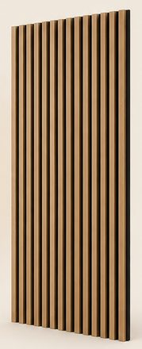
85,99 €Voir sur Amazon -
Olivier artificiel 150 cm et cache-pot blanc cannelé
L'olivier est livré dans un petit pot noir en plastique (Ø 16 cm). Pour le pot blanc de l'image : cache-pot cannelé en céramique, Ø 28 cm, 25 cm de haut.
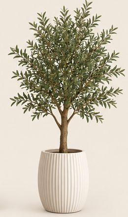
-
Vase en céramique ondulé
Blanc cassé, environ 25 cm. L'image en montre 2 (table et buffet).
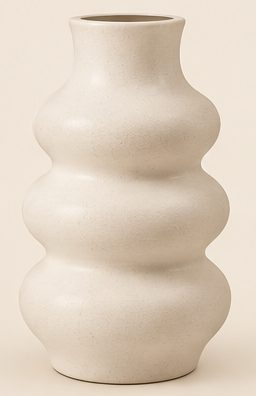
24,99 €Voir sur Amazon -
Branches de fleurs de cerisier blanches (lot de 4)
Environ 100 cm, fleurs artificielles blanc crème. Pour les 2 bouquets de l'image, compte 2 lots.
26,99 €Voir sur Amazon -
Bougies LED en verre strié (lot de 3)
3 hauteurs, flamme vacillante, télécommande et minuteur.
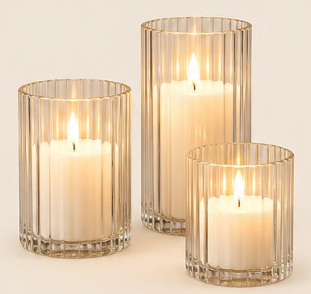
26,99 €Voir sur Amazon -
Lampe champignon en verre strié
Verre blanc crème torsadé, lumière douce.
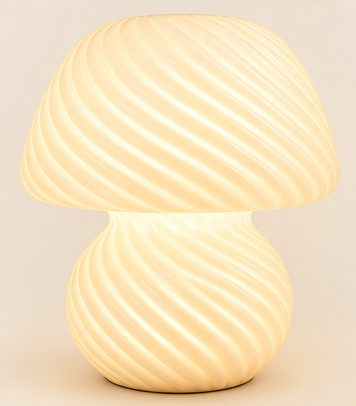
36,99 €Voir sur Amazon -
Plateau en marbre naturel 30 × 20 cm
Marbre blanc veiné de gris.
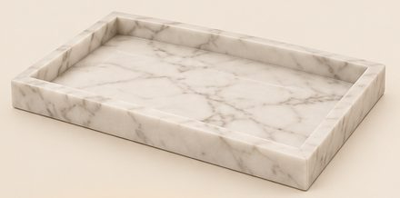
42,99 €Voir sur Amazon -
Ruban LED COB blanc chaud 5 m
Ligne de lumière continue (gorge au plafond, tasseaux). Il faut plusieurs rouleaux pour toute la pièce.
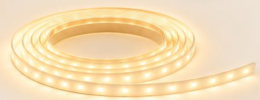
29,99 €Voir sur Amazon
Enregistrer ce look sur Pinterest
Image d'inspiration générée par IA. Prix indicatifs, revérifiés toutes les deux semaines.